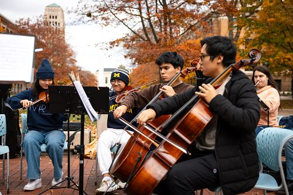

Introduction: Why Community Matters
College is more than just academics—it's about finding your community and feeling a sense of belonging. U-M offers a wide range of identity-based support services, mentorship programs, and student organizations to help you connect with others who share your experiences.
Why Building Community is Important
- Support networks reduce isolation - Finding peers with similar experiences helps students feel understood and supported.
- Resources for first-gen students - Many students are the first in their families to attend college, and U-M provides specialized guidance.
- Diversity & inclusion spaces - There are centers and student groups dedicated to cultural, gender, and identity-based support.
What You'll Find on This Page
- First-Generation Student Support: Resources for navigating college as a first-gen student, including advising and mentorship.
- Identity-Based & Cultural Communities: Spaces where students can connect based on shared experiences.
- Campus Centers & Support Organizations: Key departments that provide identity-based support, events, and networking opportunities.
- Looking to Get Involved?
Check out Maize Pages to explore student-run organizations that align with your interests.
First-Generation Student Support
Who Are First-Generation Students?
A first-generation (first-gen) student is typically someone whose parents or guardians did not complete a four-year college degree. Navigating college can be challenging, but U-M provides dedicated support services.
Key Resources for First-Gen Students
- First-Generation Gateway: First Gen at U-M – A central hub for mentorship, academic support, and financial aid guidance.
- CEW+ (Center for the Education of Women+): CEW+ Website – Supports first-gen and nontraditional students with scholarships, coaching, and community events.
- First-Gen Student Org: Join U-M Firsts, a student-run organization that hosts workshops and networking opportunities.
Pro Tip: Attend the First-Generation Student Welcome Event at the start of the semester to meet other first-gen students and learn about available resources.
Identity-Based & Cultural Communities
Why Join an Identity-Based Group?
Finding a space where you feel represented and supported can enhance your college experience. These groups focus on cultural identity, advocacy, and peer support.
Key U-M Cultural & Identity-Based Centers
- Trotter Multicultural Center – A hub for diversity, equity, and inclusion, hosting cultural events and discussions.
- Spectrum Center – Support for LGBTQ+ students, including counseling, community groups, and leadership programs.
- Black Student Union (BSU) – Advocates for Black students and organizes community-building events.
- Multi-Ethnic Student Affairs (MESA) – Promotes social justice and cultural engagement through programs for students of color.
Pro Tip: Attend cultural events like Heritage Months, MLK Symposium, and International Night to meet students from diverse backgrounds!
Campus Centers & Support Organizations
Where to Find Support
- MESA (Office of Multi-Ethnic Student Affairs) – Supports students of color through workshops and networking events.
- CEW+ (Center for the Education of Women+) – Offers scholarships, career coaching, and mentoring for first-gen and underrepresented students.
- Dean of Students Office – Assists students in navigating university life, resolving challenges, and connecting with support systems.
- Student Life Involvement Center – Helps students find organizations, leadership opportunities, and student government roles.
Pro Tip: If you're unsure where to start, visit the Dean of Students Office to get connected to the right resources.
Get Connected!
Find your community today! Whether you're looking for academic support, cultural connections, or leadership opportunities, U-M has a space for you.